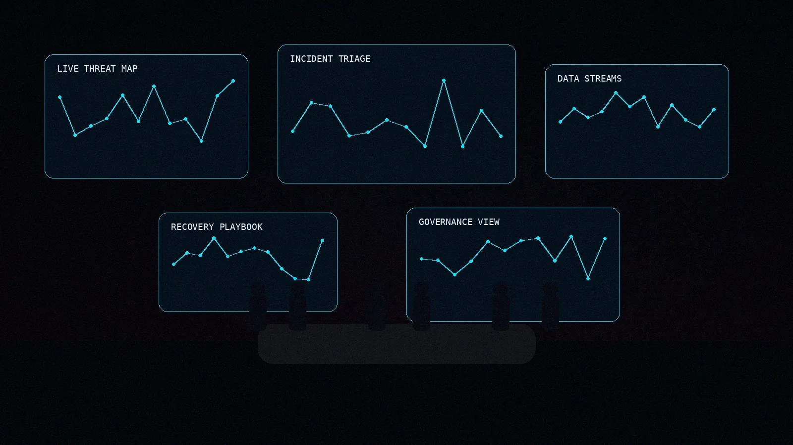
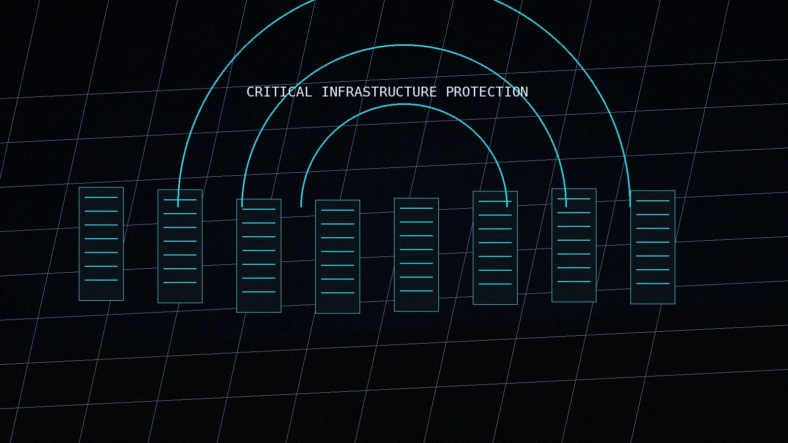
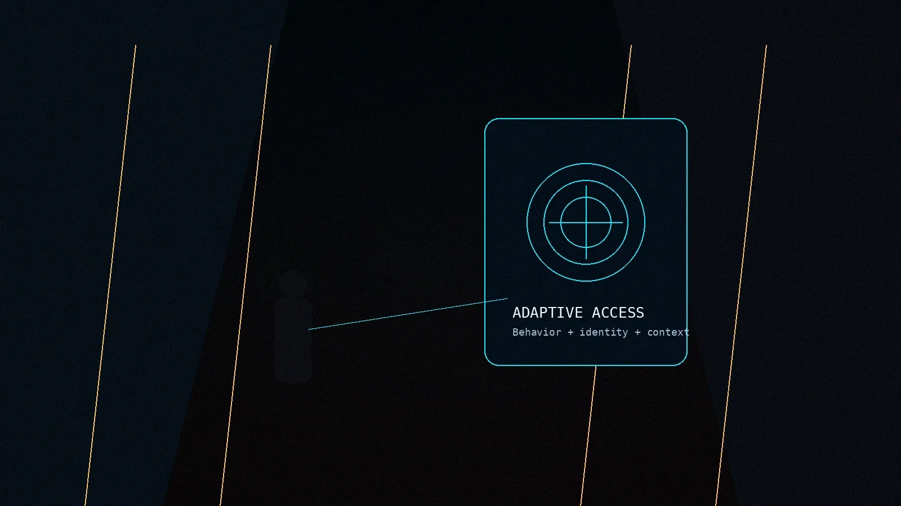
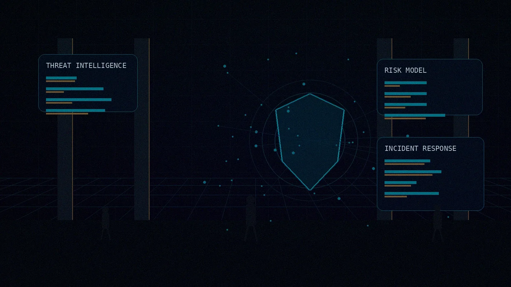
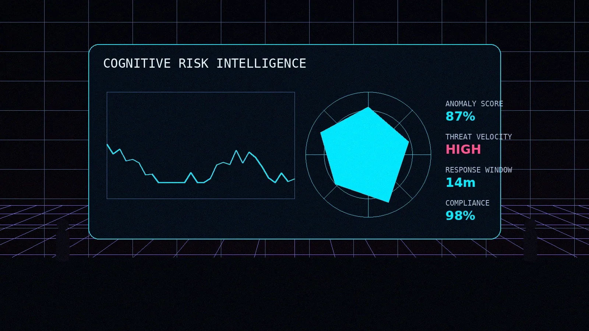
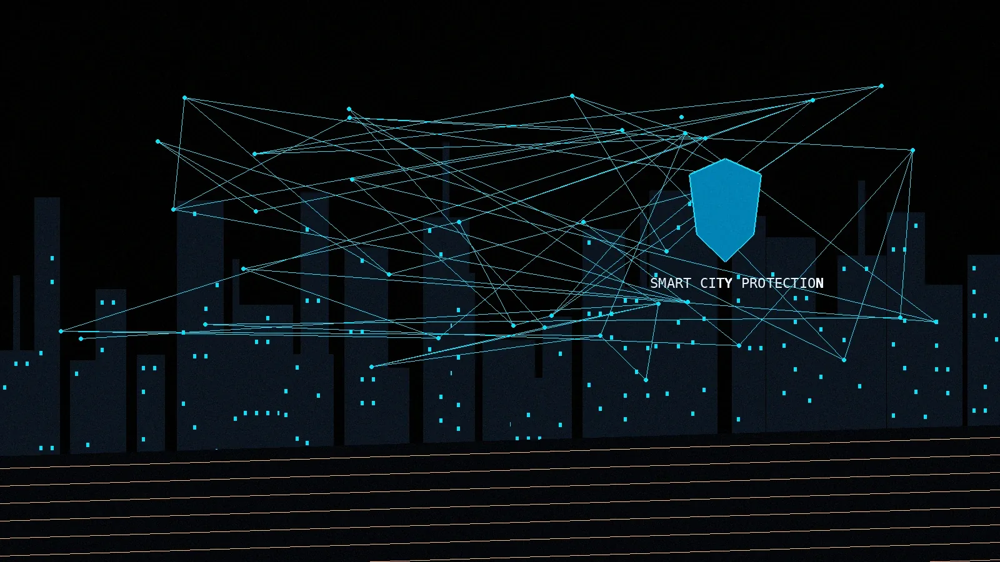

Threat Intelligence
AI-powered monitoring of global threats and attack vectors.
Scalixr Security combines AI, behavioral analytics, and real-time response to protect cities, enterprises, and infrastructure with cognitive precision.
From data to operations, we build adaptive defenses that learn, predict, and neutralize threats in real time.
AI-powered monitoring of global threats and attack vectors.
Detect anomalies and insider risks using cognitive modeling.
Protect critical systems, networks, venues, and IoT infrastructure.
Autonomous response and recovery with AI-driven orchestration.
The division turns security operations into a living intelligence layer for smart environments, enterprise campuses, cultural venues, and future cities.




A single intelligence surface connecting people, systems, alerts, and decisions.

Predictive scoring for vulnerabilities, patterns, behavior, and operational weak points.

AI-assisted monitoring for districts, facilities, events, and connected public spaces.
The website uses silent looping video moments to communicate cybersecurity, command centers, and surveillance without heavy controls.
Monitor city-scale risk signals, incident clusters, connected zones, and response workflows.
Connect access, surveillance, visitor flows, and security teams into one intelligent command layer.
Analyze crowd movement, anomaly signals, and on-ground response actions in real time.
Protect utilities, facilities, logistics networks, and operational technology environments.
It is an AI security division focused on threat intelligence, behavior analysis, infrastructure protection, and incident response.
It can support smart cities, corporate campuses, government programs, entertainment venues, public spaces, and critical infrastructure.
No. The concept is designed to connect with existing cameras, sensors, dashboards, access systems, and security operation workflows.
Yes. The website presents the division as a focused concept for strategic partners, investors, and institutional collaboration.
For strategic collaboration, investment, sponsorship, or concept development, contact Scalixr AI.